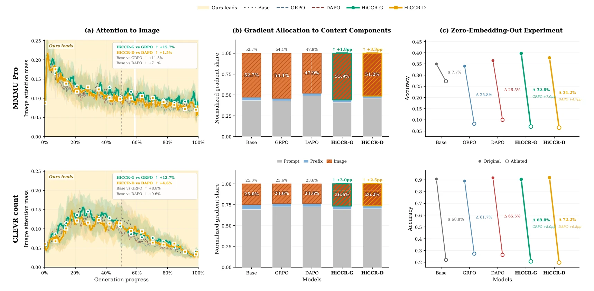
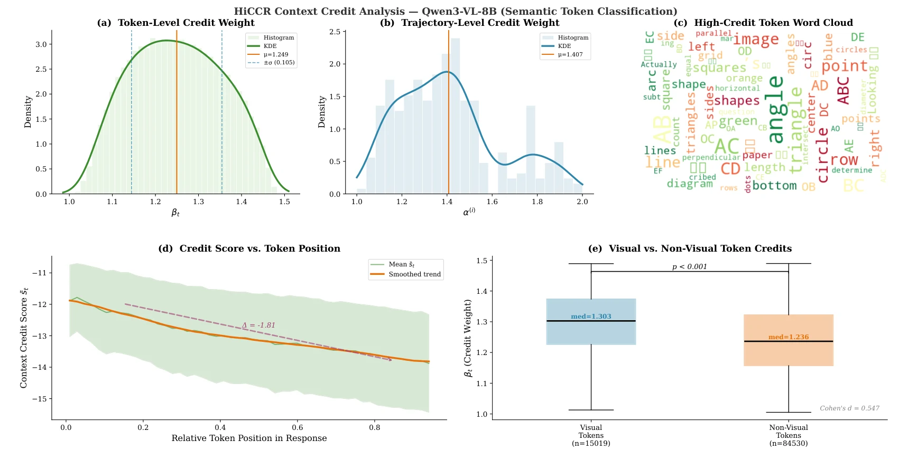
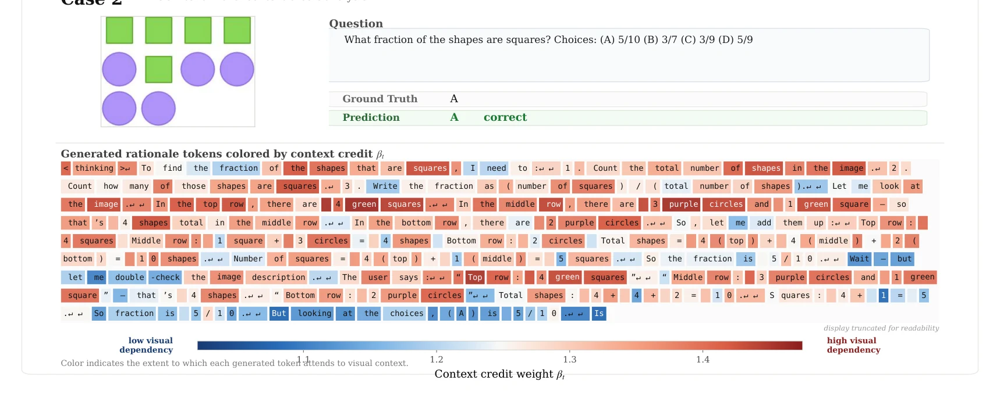
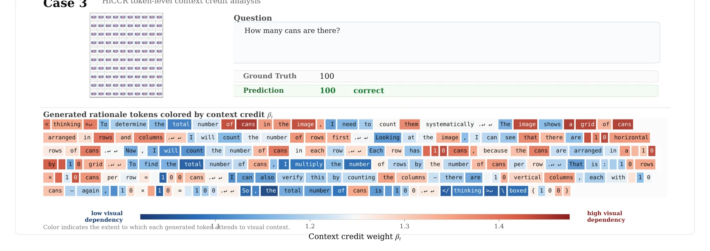
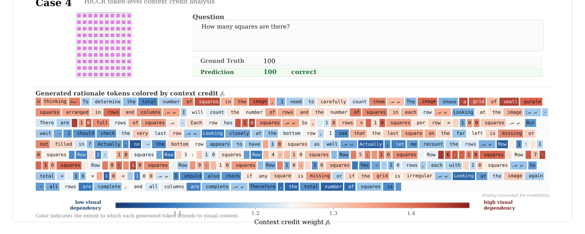

Abstract
Multimodal reinforcement learning with verifiable rewards (RLVR) algorithms assign the same advantage to every token in a generated sequence, providing no differential signal for tokens with varying degrees of dependence on visual evidence. A simple experiment confirms this issue: scaling token advantages by uninformative random noise already outperforms uniform credit, suggesting that uniform credit is empirically suboptimal. Beyond that, we observe that RLVR tuning under uniform credit weakens visual grounding along three complementary axes: attention, gradient attribution, and functional dependence on image embeddings, collectively indicating insufficient utilization of visual evidence. To understand this degradation, we provide a theoretical analysis showing that, under language-prior dominance and regularity conditions, uniform credit can amplify a pretrained text-favored gradient imbalance, contributing to weaker visual attention. In response, we propose Hierarchical Context Credit Reassignment (HiCCR), which reassigns credit at two levels: a token-level weight amplifies the advantage for visually grounded tokens, and a trajectory-level weight upweights rollouts with stronger visual engagement. The entire mechanism adds less than 3% wall-clock overhead and applies to mainstream RLVR algorithms without auxiliary models or additional data. On ten benchmarks spanning mathematical and general multimodal reasoning, HiCCR consistently improves upon its corresponding base algorithm and achieves state-of-the-art results among open-source models of comparable scale, while alleviating the weakening of visual grounding observed under RLVR training.
Motivation
GRPO and DAPO broadcast one trajectory-level advantage  to every token, whether the token reads a clock hand from the image or merely writes “Therefore”. Two observations suggest this is a poor default.
- Uniform credit is suboptimal. Multiplying each token's advantage by uninformative noise wt ∼ 𝒩(1, 0.2²) already outperforms uniform credit in all four settings (GRPO/DAPO × Qwen3-VL-4B/8B), e.g., 68.29 → 71.40 AVG@8 for DAPO on 8B.
- Uniform credit weakens visual grounding. Compared with the base model, RLVR-tuned models attend less to the image, assign a smaller share of gradient attribution to image tokens, and lose less accuracy when image embeddings are zeroed out.

Theoretical explanation (Appendix B)
Pretrained MLLMs exhibit language-prior dominance: non-visual context carries larger downstream-projected activations than visual context (κemp > 1, verified on Qwen3-VL and InternVL3). Under this condition, a uniform positive advantage gives text-side tokens a larger share of the gradient on WQ, and the visual attention mass changes to first order as
so it decreases whenever the same-step drift Dt dominates the cross-step term Rt. Uniform credit thus amplifies a bias that pretraining already put in place.
Method
HiCCR derives every weight from a single quantity, the context credit CV(t): one minus the normalized entropy of token t's attention restricted to the visual positions 𝒱, averaged over heads of the last two layers. A token that locks onto a few image regions scores high; a token whose visual attention is diffuse scores low.
Token Credit Reassignment (TCR)
Within each sequence, scores are standardized and passed through a sigmoid, giving a smooth and bounded multiplier. No token is masked out.
Trajectory Advantage Reweighting (TAR)
Within each rollout group, the mean credit of each trajectory is min–max normalized, upweighting rollouts with stronger visual engagement.
The two weights are applied asymmetrically: only positive advantages are reshaped, so that incorrect rollouts are not penalized merely for attending to the image.
HiCCR is a drop-in change to the advantage. We denote it HiCCR-G on GRPO and HiCCR-D on DAPO. Defaults: λtok = 0.5, τ = 0.5. The score reuses queries and keys from the forward pass, so no extra backward pass is required.
Main Results
We train on ViRL39K and compare against nine RLVR algorithms reproduced under identical settings. Accuracy is averaged over eight runs (AVG@8) on nine reasoning benchmarks: five mathematical (Geometry3K, MathVerse, MathVista, WeMath, MathVerse-Vision) and four general/logical (MMK12, CLEVR-Count, LogicVista, MMMU).
| Method | Qwen3-VL-4B | Qwen3-VL-8B | ||||
|---|---|---|---|---|---|---|
| Math | General | Overall | Math | General | Overall | |
| Base (Instruct) | 49.78 | 48.17 | 49.07 | 56.33 | 54.94 | 55.71 |
| RLVR baselines | ||||||
| SAPO | 51.83 | 52.71 | 52.22 | 58.17 | 54.09 | 56.35 |
| GSPO | 69.34 | 60.59 | 65.45 | 73.88 | 64.86 | 69.87 |
| CISPO | 63.32 | 57.83 | 60.88 | 64.71 | 60.72 | 62.93 |
| Reinforce++ | 67.24 | 61.93 | 64.88 | 74.94 | 69.95 | 72.32 |
| PAPO | 65.80 | 60.84 | 63.59 | 72.31 | 67.68 | 70.25 |
| DVRP | 69.60 | 61.95 | 66.20 | 73.06 | 66.63 | 70.20 |
| VPPO | 67.39 | 60.99 | 64.19 | 68.17 | 63.46 | 65.58 |
| Matched pairs: base algorithm → + HiCCR | ||||||
| GRPO | 64.17 | 59.17 | 61.95 | 64.24 | 60.31 | 62.49 |
| HiCCR-G (ours) | 72.65 | 66.55 | 69.94 +7.99 | 69.79 | 63.94 | 67.19 +4.70 |
| DAPO | 71.40 | 62.80 | 67.58 | 70.95 | 64.96 | 68.29 |
| HiCCR-D (ours) | 71.36 | 65.93 | 68.95 +1.37 | 76.01 | 68.69 | 72.76 +4.47 |
- Consistent gains. HiCCR improves its base algorithm in all four matched settings: +7.99 / +1.37 on 4B and +4.70 / +4.47 on 8B (GRPO / DAPO).
- Comparison with larger models. HiCCR-D on Qwen3-VL-8B (72.76) surpasses Qwen2.5-VL-72B (61.65), InternVL2.5-78B (55.26), GPT-4o (60.95) and Gemini-2.0-flash (61.40) on the same benchmarks (Table 7 in the paper).
- Generalization. Gains carry over to InternVL3-8B (+3.21 / +3.23), to training on Geometry3K only (+2.7 to +3.2), and to perception and hallucination benchmarks never used for training (MMStar 72.2%, HallusionBench 62.7%).
- Efficiency. On Qwen3-VL-8B, HiCCR adds 2.7% time per step (619 → 636 s) and 4.5% peak memory, while the perturbation-based PAPO adds 26.3% time.
Analysis
Which credit signal matters?
We keep the training recipe fixed and only change how token-level credit is assigned. Random and heuristic weightings give small gains; applying the same formula to text context or using unnormalized attention energy is clearly worse. Concentration within the visual tokens is the signal that matters.
| Strategy | Token weight | Qwen3-VL-4B | Qwen3-VL-8B | ||
|---|---|---|---|---|---|
| GRPO | DAPO | GRPO | DAPO | ||
| Uniform (baseline) | Same  for every token | 61.95 | 67.58 | 62.49 | 68.29 |
| Random | wt ∼ 𝒩(1, 0.2²) | 62.63 | 68.58 | 62.72 | 71.40 |
| Time-decay | wt = γT−t | 63.04 | 64.00 | 63.02 | 68.51 |
| Entropy mask | Top-20% high-entropy tokens | 63.50 | 66.67 | 63.74 | 70.28 |
| HiCCR-T | Same formula over text context | 61.50 | 67.19 | 64.62 | 69.18 |
| Raw energy | logsumexp over 𝒱, unnormalized | 66.61 | 68.67 | 65.50 | 72.08 |
| HiCCR | Intra-visual concentration | 69.94 | 68.95 | 67.19 | 72.76 |
Further ablations in the paper: TCR and TAR are complementary (Table 3); soft weighting beats hard top-k masking (Table 8); the last two layers give the best signal (Table 9); the asymmetric rule outperforms symmetric reshaping by 5.1 / 4.0 points (Table 10); results are stable for λtok ∈ [0.5, 0.8] (Table 11).
Where does the credit go?
HiCCR receives no token-level supervision, yet the highest credit lands on tokens that refer to visual content (e.g., triangle, angle, diagram). Visually grounded tokens receive significantly more credit than other tokens (median β 1.303 vs. 1.236, Cohen's d = 0.547, p < 0.001).

Credit lens
A real rollout from Qwen3-VL-8B, colored by context credit βt
Q. The clocks show two things Lily did Tuesday evening. Which did Lily do earlier?
(A) ate dinner (B) watched a movie
Ground truth BPrediction B ✓ correct
dependency high visual
dependency
Hover a token to read its weight.
Case study. Without any token-level supervision, HiCCR gives the highest credit to tokens that read the image (clock positions, hour digits, the labels “watched a movie” and “ate dinner”), and the lowest to tokens that compute or connect (“Next, I look”, “Therefore”, the closing tags). Weights are approximate, estimated from the color map of the appendix figure. Three more cases are shown below.



BibTeX
@inproceedings{gao2026hiccr,
title = {Not All Tokens Should Be Treated Equally: Context Credits Reassignment},
author = {Gao, Shujian and Wang, Yuan and Yan, Jiamei and Zhou, Penghao and
Wang, Qinglei and Yan, Jiangtao and Wu, Zuxuan and Jiang, Yu-Gang},
booktitle = {Advances in Neural Information Processing Systems},
year = {2026}
}